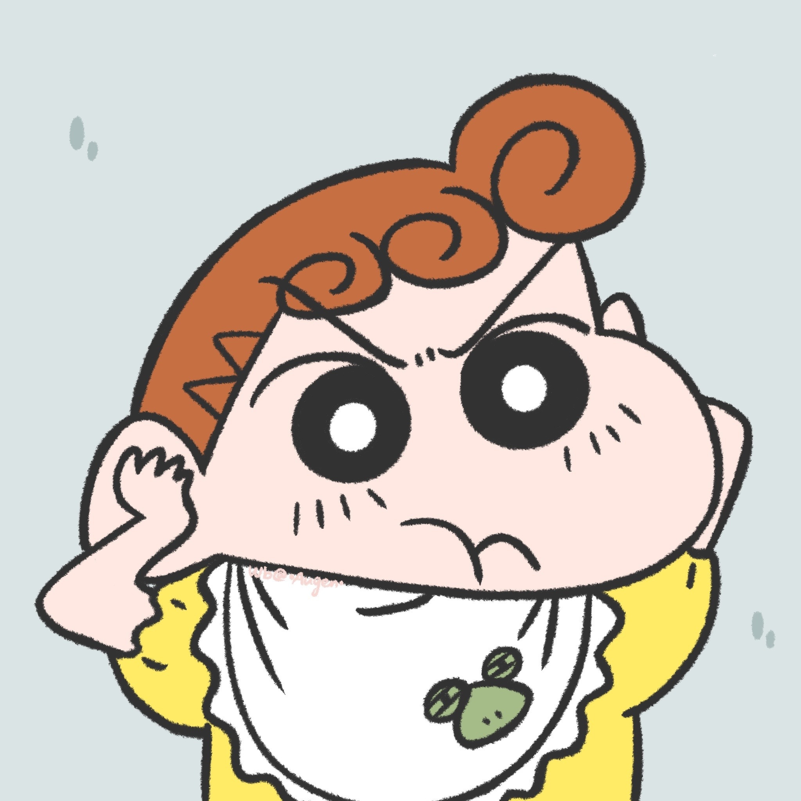
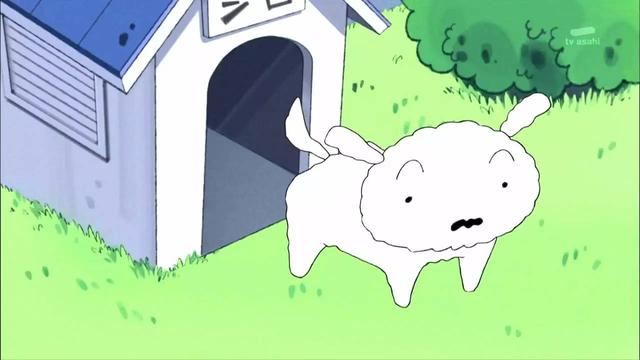

野原新之助
核心人物，5歲，5月5日生，血型B型，暱稱「小新」，就讀雙葉幼稚園向日葵班，春日部防衛隊隊員之一。最愛的人是大原娜娜子。喜歡看動感超人、剛達姆機器人和魔法少女可愛P，喜歡把屁屁或大象露出來，經常與漂亮的大姐姐搭訕，最怕吃青椒。
野原美冴
小新的母親，29歲，血型B型，身高160公分、體重49公斤，熊本縣阿蘇市出身，本姓小山，全職的家庭主婦。喜歡購買有優惠的東西。常使用「美冴拳」或用「拳頭轉轉」教訓小新，常被小新稱為「三層肥肉老太婆」。經常購買減肥食品及器材。喜歡帥哥。結婚前是個上班族，任職於小山田物産株式會社。

野原葵
小新的妹妹，0歲，還不會說話，名字來自對讀者的公開募集，在動畫版中則被安排以野原家代代相傳的方式取名。 性格與美冴相似，一樣喜歡帥哥，超喜歡閃閃發光的東西，與小新一樣頑皮。

野原小白
野原家飼養的小狗，雄性，毛色為白色。原被棄養，後由小新收養。特技是「棉花糖」（把身體捲成球型）和抓重要部位（稱為搓肚子）。雖不會說話，但似乎能明白小新說的話。